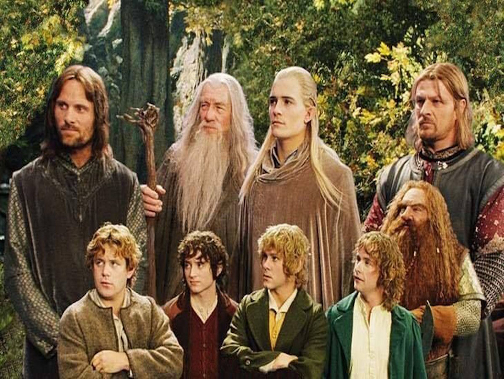

Frodon, un hobbit, hérite d'un anneau magique maléfique. Guidé par Gandalf, il doit le détruire dans les flammes du Mont Doom avec l'aide d'une communauté de compagnons. Leur périple les mènera à travers des terres dangereuses, confrontés à des créatures et des ennemis redoutables. Le destin de la Terre du Milieu repose sur leurs épaules.
Le seigneur des anneaux: La Communauté de l'Anneau
desciption
Directed by Peter Jackson
Produced by
Barrie M. Osborne
Peter Jackson
Walsh
Sanders
Distributed by New Line Cinema
Budget $94 million
Box office $883.4 million
Release dates 19 December 2001 (United States)

frodo baggins
Frodon Sacquet est un hobbit paisible et jovial, héritier d'un fardeau immense : l'Anneau Unique. Courageux malgré sa nature douce, il est déterminé à accomplir sa quête pour sauver la Terre du Milieu du Seigneur des Ténèbres Sauron.
samwise gamgee
Samwise Gamgee, dit Sam, est un hobbit fidèle et dévoué, jardinier de Frodon. Loyauté sans bornes et courage insoupçonné l'accompagnent dans sa quête périlleuse aux côtés de son ami. Son esprit vif et sa débrouillardise font de lui un atout précieux pour la Communauté de l'Anneau.
peregrin took
Peregrin Touque, surnommé Pippin, est un jeune hobbit impulsif et curieux. Son enthousiasme et sa naïveté cachent un courage grandissant et une loyauté indéfectible envers ses amis. Son imprudence le mène parfois dans des situations périlleuses, mais il fait preuve d'une ténacité et d'une ressource insoupçonnées pour s'en sortir.
meriadoc brandybuck
Meriadoc Brandebuck, dit Merry, est un hobbit intelligent et rusé, cousin de Pippin. Son esprit vif et son sens de l'humour l'accompagnent dans ses aventures aux côtés de la Communauté de l'Anneau. Malgré sa petite taille, il se montre courageux et déterminé face aux dangers, n'hésitant pas à se battre pour défendre ses amis et la Terre du Milieu. Sa sagesse grandissante et sa loyauté indéfectible font de lui un membre précieux de la compagnie.
aragorn
Aragorn, héritier des rois, est un homme noble marqué par les épreuves. Sage et expérimenté, il porte le destin de la Terre du Milieu sur ses épaules. Guerrier redoutable et leader charismatique, il inspire le respect et guide la Communauté de l'Anneau vers la victoire.
gimli
Gimli, Nain au grand coeur, guerrier redoutable à la hache, se joint à la Communauté dans sa quête pour sauver la Terre du Milieu. Son courage, sa loyauté et son sens de l'honneur font de lui un compagnon précieux.